Er der liv derude?
Astronomi C
Vibenshus Gymnasium
Er der liv derude?
Hvad tror I?
- Er vi kun en civilisation af mange?
- Er vi de eneste… Universets supercivilisation!?
To ekstremer
- Er vi kun en civilisation af mange? Frank Drake
- Er vi de eneste… Universets supercivilisation!? Enrico Fermi
Frank Drake
Det er mange supercivilisationer i Mælkevejen, der er bare for langt imellem dem, til at de/vi kan kommunikere med dem.
Drake-ligningen: \[N=R \cdot f_p\cdot n_e \cdot f_l\cdot f_i\cdot f_c \cdot L\]
- \(N\): antal civilisationer i Mælkevejen, vi kan kommunikere med.
- \(R\): antal af sollignende stjerner, der dannes pr. år i Mælkevejen.
- \(f_p\): brøkdel af stjerner med planeter.
- \(n_e\): antal jordlignende planeter i et typisk solsystem.
- \(f_l\): brøkdel af disse planeter hvorpå der opstår liv.
- \(f_i\): brøkdel af de planeter med liv, som udvikler sig til intelligent liv.
- \(f_c\): brøkdel der udvikler en teknisk civilisation, som kan kommunikere.
- \(L\): gennemsnitslevetiden for en teknisk civilisation.
Se mere i tema 15.4 s. 271 i Det Levende Univers.
Enrico Fermi
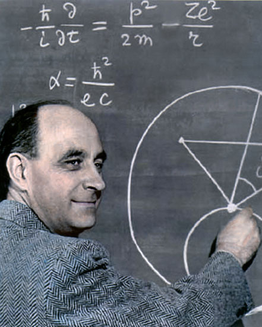
Fermiparadokset
Hvor bliver de af?
- Med vores egen ekspansionsiver/hastighed burde vi kunne kolonisere hele Mælkevejen indenfor 5 millioner år.
- Så hvor bliver alle andre tilsvarende civilisationer af?
Fermiparadokset
Direkte link: https://youtu.be/sNhhvQGsMEc
Så, skal vi tro på Drake…
eller Fermi?
- Lad os starte med (at prøve) at forstå vores eget solsystem.
- Her ved vi trods alt, at der er (intelligent) liv.
Forståelse af vores eget solsystem
Dannelse
Direkte link: https://youtu.be/8Rg9v3J0IiU
Som en snebold
Populær forklaring
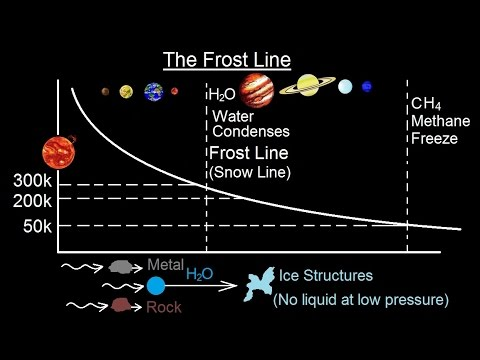
- Overalt "regner" det med sten- og metalpartikler. Disse samler sig som "snebolde"
- Tæt på Solen er det for varmt til at det kan regne med vand.
- Gasser (inkl vanddamp) blæses væk fra Solen.
- Ved lavt tryk desublimerer gasser til fast form (flydende form springes over).
- Tilpas langt væk fra Solen sner det også med vand.
- Overgangen sker ved frost/is/sne-grænsen/linjen.
Lidt mere info
Direkte link: https://youtu.be/Z8CzVUeCTjc
Planetdannelse
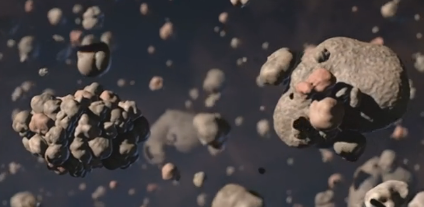
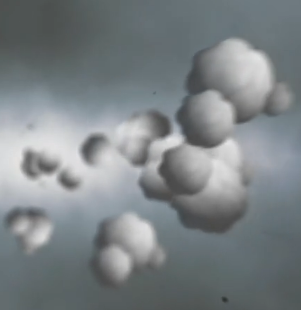
- Tæt på Solen er kun de små tætte (høj densitet) planeter. (Merkur, Venus, Jorden og Mars). For varmt til, at det kan sne med vand (vand er et af de mest almindelige stoffer i universet).
- Det er for varmt og planeterne er for små til at kunne holde på brint og helium.
- På den anden side af frostlinjen sner det også med vand. Der dannes isplaneter. Disse kan blive op til 10 gange jordens masse.
- Hvis brint- og heliumgassen stadig er til stede, vil de store isplaneter tiltrække gassen og danne de store gasplaneter.
- I vores tilfælde Jupiter, Saturn (, Uranus og Neptun).
Drake eller Fermi?
- Giver dette anledning til at tro, at dette også er sket i andre planetsystemer?
Men hvor kom vandet på Jorden så fra?
Det store bombardement (Late Heavy Bombardment)
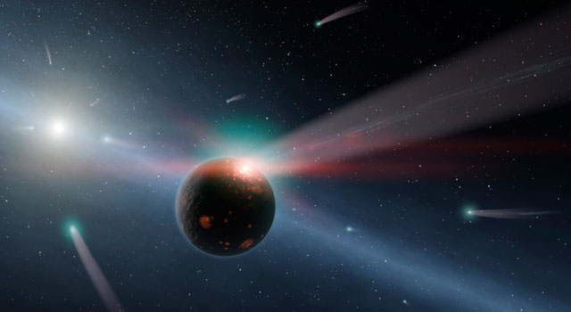
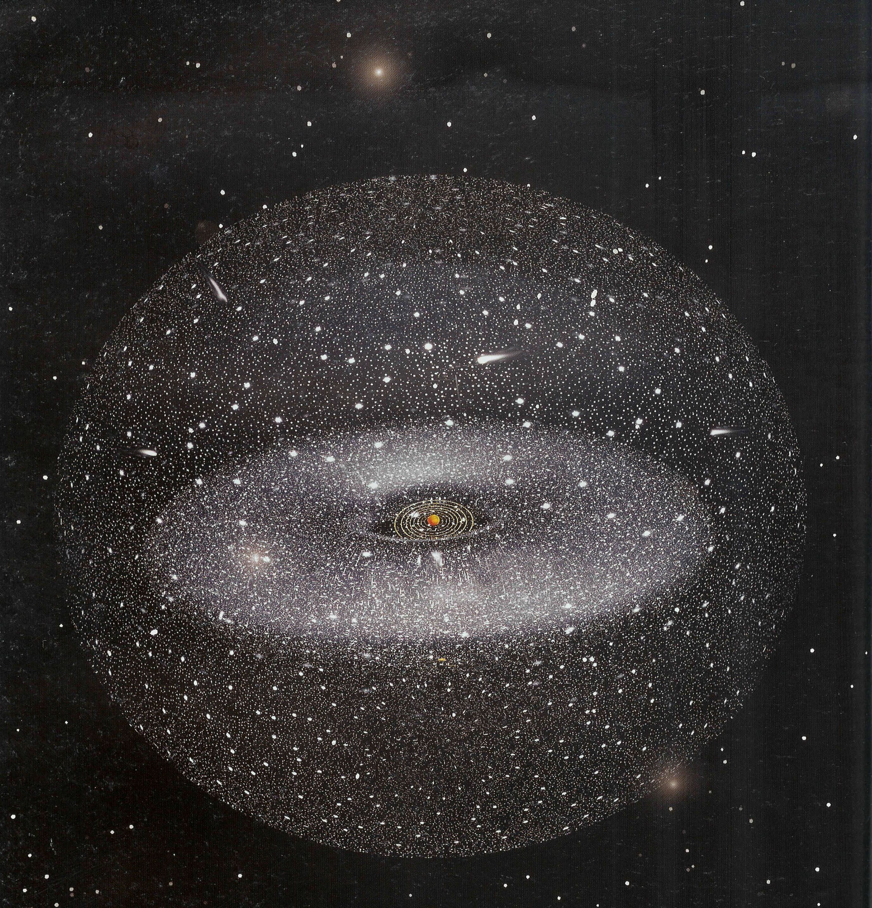
NICE-modellen
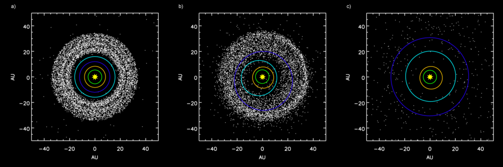
- Jupiter grøn
- Saturn orange
- Neptun mørkeblå
- Uranus lyseblå
- Jupiter og Saturn glider langsomt indad mod Solen.
- Jupiter og Saturn rammer en 2:1 resonans. Jupiter når præcis rundt om Solen 2 gange mens Saturn når præcis 1 gang rundt.
- Dette forstyrer solsystemet voldsomt.
- Sender Neptun og Uranus udad i solsystemet, og de bytter bane.
- Asteroider(sten og metal) og kometer (sten, metal og IS) sendes i tilfældige retninger.
Resultatet
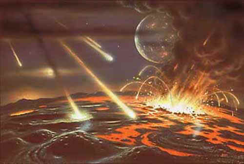
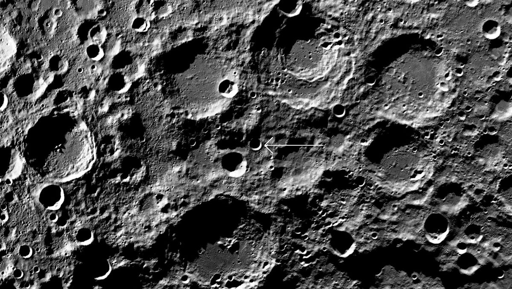
- Der falder 2000 tons kosmisk materiale på Månen og Jorden pr. m^2.
- Mængden af vand på Jorden stemmer overens med antallet af faldne kometer!
- De kometer, som ikke slynges ind ad og rammer de inderste planeter og Solen, slynges ud ad og danner Oort-skyen.
Murchison meteoritten
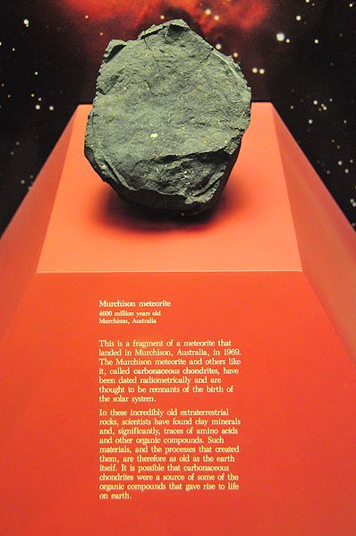
- Murchison-meteoritten faldt i Australien i 1969.
- menes at være rester af en komet. (Det diskuteres stadig, om det er en asteroide eller en komet).
- Indeholder 11 af de 20 aminosyrer, der opbygger proteiner, som livet her på Jorden på består af.
- Ligeledes er der fundet 3 af de 5 nukleotider (Bogstaverne i RNA og DNA) som beskriver arvemassen for livet på Jorden.
LHB - En kort video
LHB - En lidt længere video
Hvor kom vandet fra - en længere video
Drake eller Fermi?
- Livets byggesten (aminosyrer og nukleotider) og mediet (vand), det skal udvikle sig i, "regner" åbenbart ned over planeterne.
- Vil det også være gældende for andre planetsystemer?
Kun én måde at finde ud af det på
Vi skal studere exoplaneter!
Exoplaneter
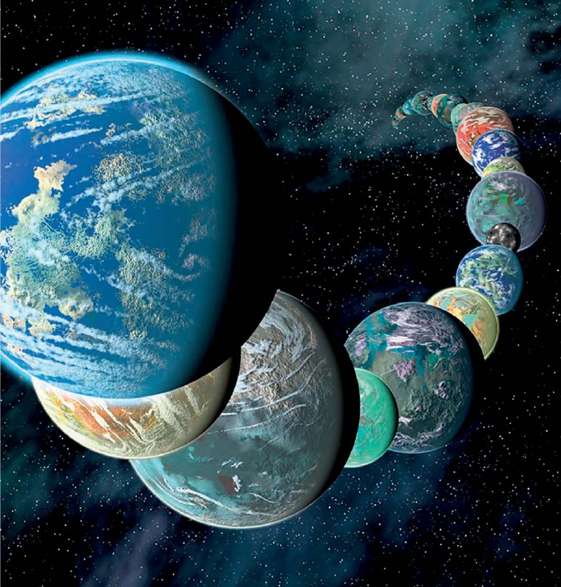
Exoplaneter
- En exoplanet er en planet, som bevæger sig om en anden stjerne end Solen.
- Pr. d. 24. april 2020 er der 4255 bekræftede exoplaneter i 3146 planetsystemer hvor af 695 af systemerne har mere end en planet. (Kilde:https://en.wikipedia.org/wiki/Exoplanet)
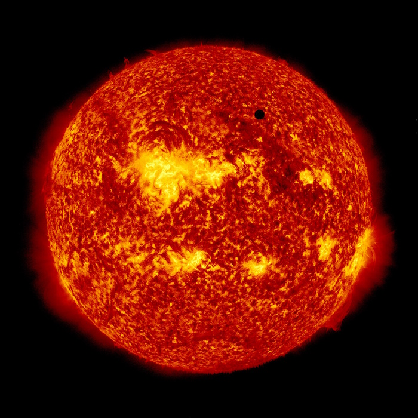
Observationsmetoder
- Formørkelsesmetoden
- Radialhastigheder
- Gravitationslinser /mikrolinsemetoden
Formørkelsesmetoden
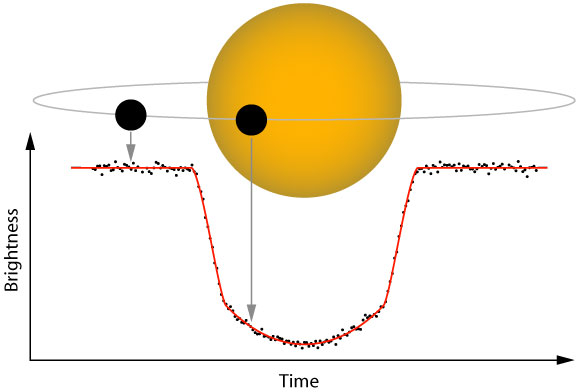
- Fordele?
- Ulemper?
Arealet og dermed lysstyrken fra stjernen nedsættes med brøkdelen \[\left( \frac{d}{D} \right)^2\]
Formørkelsens varighed afhænger af, hvordan planeten bevæger sig hen foran stjernen set i forhold til os.
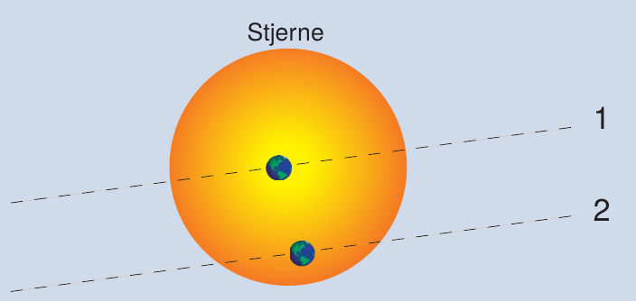
Vi ser kun formørkelser for systemer i den rette vinkel set ift os. Følgende skal være opfyldt. \[r\cdot \sin \left( \phi \right) < R\]
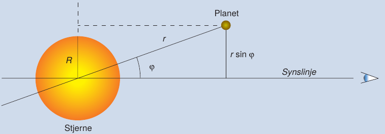
Kepler-satellitten
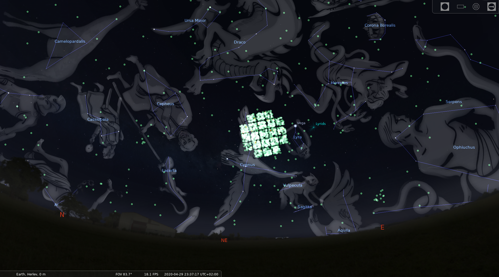
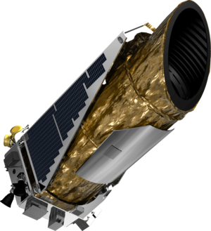
Opgave
Jorden og Jupiter som exoplaneter
Forestil jer, at I observere vort solsystem fra en planet i et andet solsystem. Det passer lige med, at I kan se Solen blive formørket af Jorden.
- Beregn, hvor land tid Jorden vil formørke Solen. Jorden bevæger sig mig 30 km/s i sin bane om Solen.
Pga. formørkelsen er Solens lysstyrke nu \(L\) i stedet for den sædvanlige værdi \(L_{\odot}\).
Beregn \(\frac{L}{L_{\odot}}\) og ændringen i Solens absolutte størrelsesklasse \(M\).
- Hvor mange grader må Jordens baneplan højst hælde ift. synslinjen, for at I kan se formørkelsen?
- Gentag beregningerne for Jupiter.
Facit
- Formørkelsestid 12.88 timer
- \(\frac{L}{L_{\odot}}=0.9999\) og \(M-M_{\odot} = 0.0001\)
- \(\phi_{Jord} < 0.27^{\circ}\)
- For Jupiter: Formørkelsestid 29.5 timer, \(\frac{L}{L_{\odot}} = 0.9894\), \(M-M_{\odot} = 0.0114\), \(\phi_{Jupiter}< 0.051^{\circ}\)
Hints til 1
\[t=\frac{D_{\odot}}{v_{Jord}}\]
Hints til 2
\[\frac{L}{L_{\odot}} = 1 - \left(\frac{d_{Jord}}{D_{\odot}}\right)^2 = 1 - \left( \frac{R_{Jord}}{R_{\odot}} \right)^2\]
Slå op bagerst i DLU
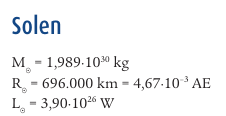
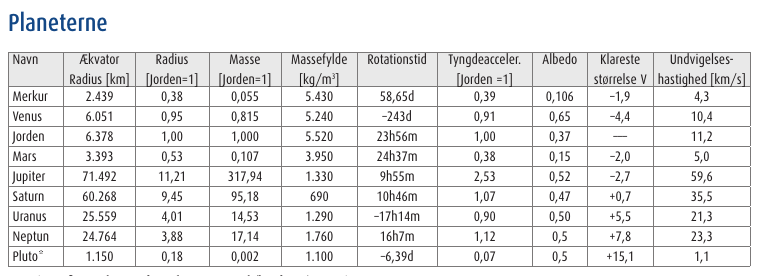
Hints til 3
\[M - M_{\odot} = -2.5 \cdot \log \left( \frac{L}{L_{\odot}} \right)\] Kan findes i kompendiet om stjerner fra tidligere.
Hints til 4
- \(r\) er baneradius.
- \(R\) er stjernens radius.
Slå Jordens baneradius op i bagerst i DLU.
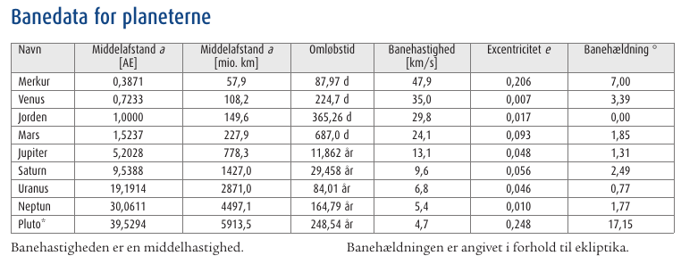
Mine beregninger
Jorden:
- \(t = \frac{D_{\odot}}{v}=\frac{2\cdot 696000 \,km}{30 \, km/s} = 46400 \,s = 12.89\,h\)
- \(\frac{L}{L_{\odot}}=1 - \left( \frac{R_{Jord}}{R_{\odot}} \right)^2 = 1 - \left( \frac{6378 \,km}{696000 \,km} \right)^2 = 0.9999\)
- \(M-M_{\odot} = -2.5\cdot \log \left( \frac{L}{L_{\odot}} \right) = -2.5 \cdot \log \left( 0.9999 \right) = 0.0001\)
- \(\phi_{Jord} < \sin^{-1}\left( \frac{R_{\odot}}{r_{Jord}} \right) = \sin^{-1}\left( \frac{696000\,km}{1.5\cdot 10^8 \,km} \right) = 0.27^{\circ}\)
Jupiter:
- \(t = \frac{D_{\odot}}{v}=\frac{2\cdot 696000 \,km}{13.1 \, km/s} = 106260 \,s = 29.5\,h\)
- \(\frac{L}{L_{\odot}}=1 - \left( \frac{R_{Jupiter}}{R_{\odot}} \right)^2 = 1 - \left( \frac{71492 \,km}{696000 \,km} \right)^2 = 0.9894\)
- \(M-M_{\odot} = -2.5\cdot \log \left( \frac{L}{L_{\odot}} \right) = -2.5 \cdot \log \left( 0.9894 \right) = 0.0114\)
- \(\phi_{Jupiter} < \sin^{-1}\left( \frac{R_{\odot}}{r_{Jupiter}} \right) = \sin^{-1}\left( \frac{696000\,km}{5.2028 \cdot 1.5\cdot 10^8 \,km} \right) = 0.051^{\circ}\)
Hvilke planeter er nemmest at observere vha transitmetoden?
- Store planeter tæt på sin stjerne.
Radialhastighed
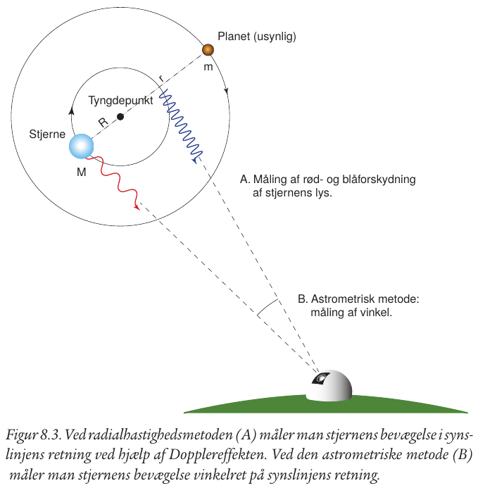
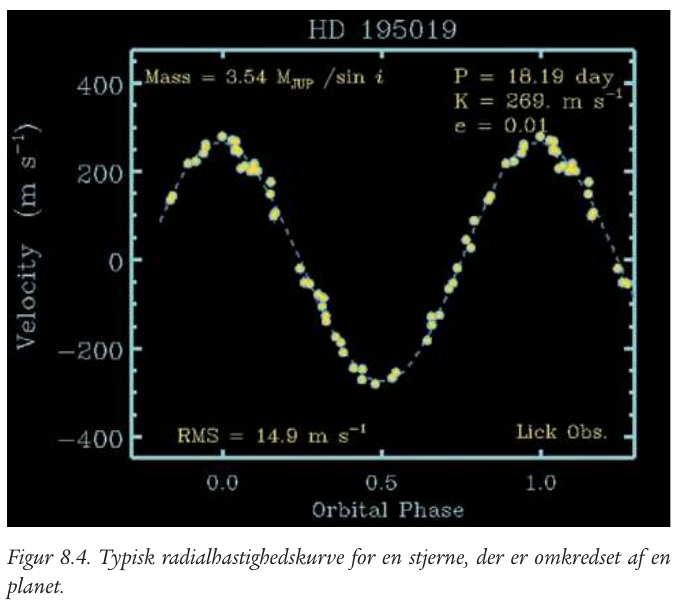
- Perioden svarer til planetens omløbstid.
- Se mere i tema 8.1 s. 139 i DLU.
Animation
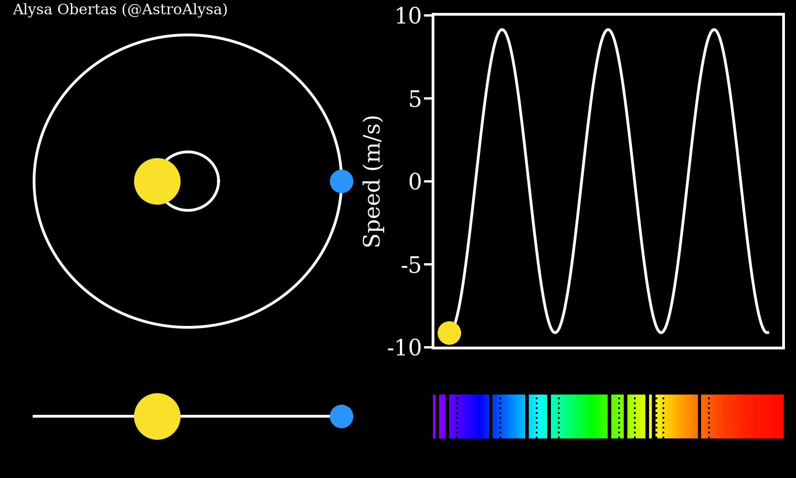
Mikrolinsemetoden
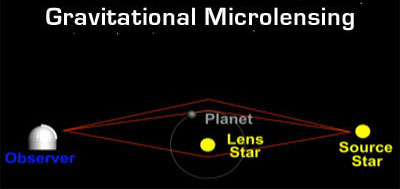
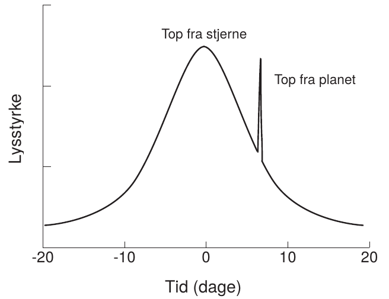
Gravitationslinse uden exoplanet

Gravitationslinse med exoplanet
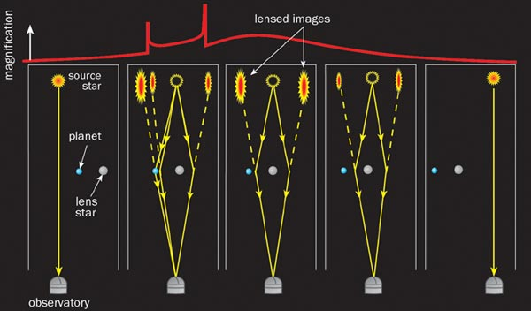
SONG-teleskopet
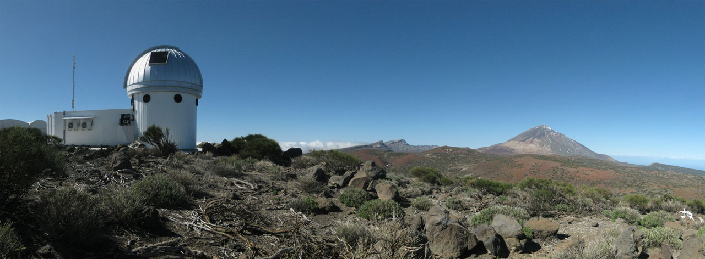
- Dansk teleskop på Tenerife.
- Samarbejde mellem Aarhus Universitet og Københavns Universitet.
- Fuldautomatiseret.
SONG was conceived with two primary scientific goals in mind:
- To study the internal structure of stars at a level to what can be done for the Sun when it is observed as a distant star using asteroseismology as a tool.
- To search for and characterize planets in orbit around other stars using both gravitational microlensing observations, transit photometry and radial velocity measurements.
Kilde: https://phys.au.dk/song/research-and-facilities/science-with-song/
Ligner exoplanetsystemerne så vores Solsystem?
- Nej slet ikke!!!
- Kepler-satellitten fandt en masse Hot Jupiters
- Store gasplaneter tæt på sin stjerne.
- (Også de nemmeste at finde observere)
- Modellen for vores solsystem kan ikke forklare dem.
- Mangler de kolde gasgiganter for at kunne skabe de store bombardementer.
Drake eller Fermi?
- Mere eller mindre liv?
Efter Kepler
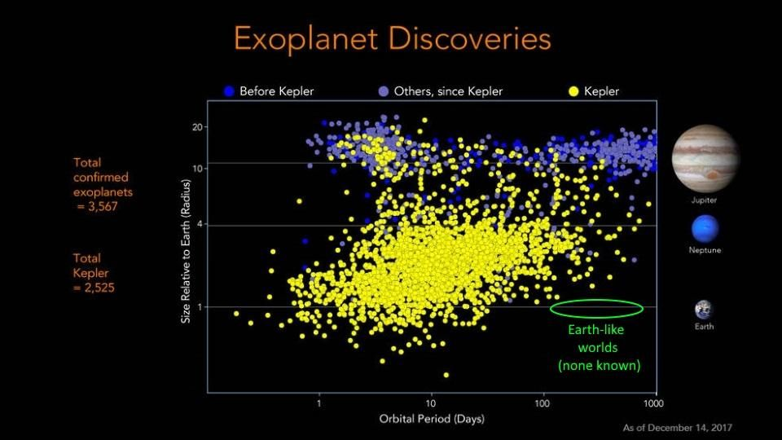
- Nu er astronomerne i stand til at observere de kolde gasgiganter.
- Spørgsmålet er blot, om der er nok af dem i hvert planetsystem til at skabe de voldsomme forstyrelser (2:1 resonans og planetbaneombytning).
Drake eller Fermi?
- Mere eller mindre liv?
Okay, men kan man så bo der?
Astronomerne har indført begrebet
- Den beboelige zone
Den beboelige zone
- Ca. samme flux som fra Solen på Jorden \(F_{\odot}=1360 W/m^2\)
- \(1200 W/m^2 < F < 1500 W/m^2\)
- \(F=\frac{L}{4 \cdot \pi \cdot r^2} \to \boxed{r=\sqrt{\frac{L}{4 \cdot \pi \cdot F}}}\)
- For \(L=L_{\odot}\) bliver bredden \[0.96 \,AE < r < 1.07 \, AE\]
- For \(L=k\cdot L_{\odot}\) bliver bredden \[\sqrt{k}\cdot 0.96 \,AE < r < \sqrt{k} \cdot 1.07 \, AE\]
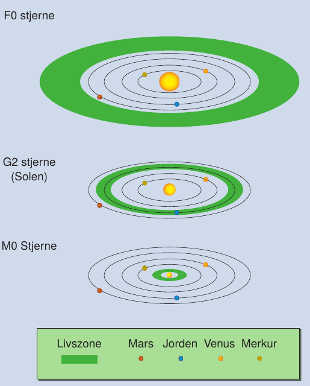
Opgave: Beboelige zoner
- Beregn den beboelige zones bredde og beliggenhed for tabellens typer af hovedseriestjerner.
- Beregn, hvor meget Solens lysstyrke skal ændre sig, før Jorden befinder sig uden for den beboelige zone.
| Sprektraltype | Lysstyrke [\(L/L_{\odot}\)] |
|---|---|
| B5 | 800 |
| A0 | 60 |
| F0 | 8 |
| G0 | 1.4 |
| K0 | 0.4 |
| K5 | 0.2 |
| M0 | 0.06 |
Facit
| Spektraltype | \(L/L_{\odot}\) | \(r_\text{min} [AE]\) | \(r_\text{max} [AE]\) | Bredde \([AE]\) |
|---|---|---|---|---|
| B5 | 800 | 27.15 | 30.26 | 3.11 |
| A0 | 60 | 7.44 | 8.29 | 0.85 |
| F0 | 8 | 2.72 | 3.03 | 0.31 |
| G0 | 1.4 | 1.14 | 1.26 | 0.12 |
| K0 | 0.4 | 0.61 | 0.68 | 0.07 |
| K5 | 0.2 | 0.43 | 0.48 | 0.05 |
| M0 | 0.06 | 0.24 | 0.26 | 0.02 |
- Hvis \(r_\text{min} = 1 AE\) så er \(1 AE = \sqrt{k} \cdot 0.96 AE \to k = \left( \frac{1}{0.96} \right)^2 = 1.085\) . Luminositeten er steget med 8.5%
- Hvis \(r_\text{max} = 1 AE\) så er \(1 AE = \sqrt{k} \cdot 1.07 AE \to k = \left( \frac{1}{1.07} \right)^2 = 0.87\) . Luminositeten er faldet med 13%
Hvor er det nemmest af finde liv?
Omkring store eller små stjerner?
Liv omkring store stjerner
Pros:
- Brede beboelige zoner (større chance for at planeterne befinder sig indenfor zonen)
- Stor afstand fra Stjernen (mindre farlig stråling)
Cons:
- Meget få store stjerner.
- Meget korte levetider på hovedserien. (~100 000 til ~1000 000 år for de største O-stjerner)!
- Livet kan ikke nå at udvikle sig inden stjernerne bliver til supernovaer.
Liv omkring små stjerner
Pros:
- Ufatteligt mange af dem (90% af alle stjerner er mindre end Solen).
- M-stjerner har levetider, som er langt overgår Universets nuværende alder (13.7 mia år).
Cons:
- Kort afstand til stjernen.
- Bunden rotation. (Ligesom Månen, samme side mod stjernen hele tiden).
- Små stjerner er "kølige", men deres overflader er meget aktive.
- Der sendes store mængder af ladede partikler (Soludbrud) ud imod planeterne.
- En verden uden dag og nat. En eventuel atmosfære slynges væk pga. solvinde, så ingen beskyttelse med den glohede plasma.
Hvad tror I nu?
- Drake eller Fermi?
Er vi blot en dum civilisation, som endnu ikke har formået at kommunikere med de andre?
Eller er vi Mælkevejens super civilisation?
Er Jorden almindelig men livet unikt?
Præsentation af Uffe Gråe Jørgensen, som denne præsentation er kraftigt inspireret af.
Direkte link: http://video.ku.dk/er-jorden-almindelig-men-livet-unikt
Længere foredrag med Uffe Gråe Jørgensen
Direkte link: https://video.ku.dk/fra-big-bang-til-liv-i-universet